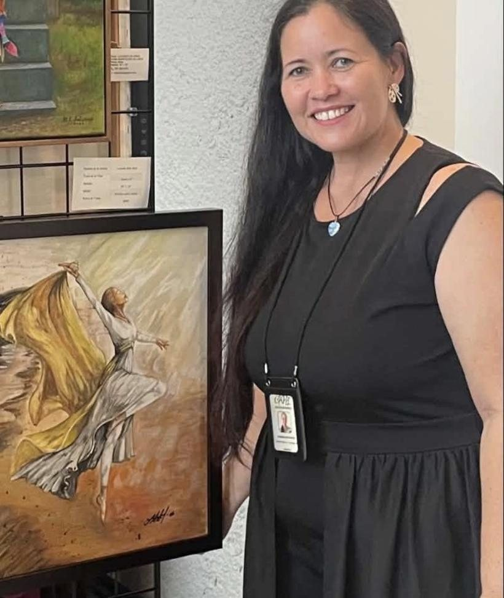

Hay historias que no se escriben.Se pintan.
Descubre el arte de Luciann Soto. Obras que inspiran, emocionan y transforman tus espacios.
Una vasija de luz se forma, se quiebra y se restaura con oro. De ella nace una mariposa. Puedes tocar la mariposa para descubrir una emoción.
La colección
Reproducciones de alta calidad de las pinturas originales de Luciann Soto. Toca una obra para ver tamaños, precio y cómo ordenarla.
Seis obras, una historia
Ir a la colecciónDesliza o usa las flechas. Lecturas curatoriales, no palabras de la artista.
¿Qué ves tú?
Antes de conocer su historia… ¿qué te hace sentir?
Dos obras, una historia
Hay historias que comienzan cuando algo se rompe
Mírala primero a ella.

Conoce a Luciann
Una vida enseñando a otros a expresarse mediante el arte.
Una obra que nos invita a descubrir lo que sentimos.
Luciann Soto Soto es artista, museóloga y maestra de Bellas Artes de Vega Alta, Puerto Rico. Se formó en la Escuela Central de Artes Visuales de Santurce, y su maestría en Museología le dio otra mirada: la de quien entiende cómo una obra se encuentra con las personas.
Desde 2014 crea, enseña y comparte su arte a través de Soto’s Art. Ha acompañado a niños y adultos en talleres como «Explorando las maravillas del Arte», y en 2018 fundó Photoboricua Kids Corp, una organización sin fines de lucro que preside. En el salón de clases enseña dibujo, pintura, drama y canto.
Su colección habla de lo que se rompe y se restaura, de la fe, la naturaleza y la fortaleza.
Cada obra es una invitación a conectar con la belleza, la fe y la fuerza de la vida.Luciann Soto, Soto’s Art – Blessing Art
Su trayectoria
- 2014Funda Soto’s Art. Comienza como tallerista de artes visuales en el Proyecto Niños de Nueva Esperanza, en Sabana Seca, hasta 2022.
- 2015Inicia los talleres para grandes y chicos «Explorando las maravillas del Arte».
- 2018Funda y preside Photoboricua Kids Corp.
- 2019Bachillerato en Comunicación Digital y Contenidos Multimedia, Universidad Ana G. Méndez.
- 2022Maestra de Bellas Artes.
- 2023Maestría en Educación con especialidad en Museología, Caribbean University.
Detrás de cada pincelada
El trabajo real detrás de sus obras.
Exploración de técnicas
Otros medios y obras de su portafolio. No están a la venta en esta galería.
Pruébala en tu pared
Elige una obra, toma una foto del espacio donde la imaginas y mírala ahí. Con los tamaños de la artista, la verás a escala real.
Ver en tamaño real
Coloca los dos puntos dorados en los extremos de algo que conozcas, como tu sofá, una puerta o una mesa, y escribe cuánto mide.
Tu foto se queda en tu dispositivo: no se sube ni se guarda. Es una simulación; el tamaño es aproximado y los colores pueden variar según tu pantalla y la impresión. Se muestra sin marco.
Cómo funciona tu orden
Adquieres una reproducción de alta calidad de una pintura original de Luciann Soto. Antes de pagar ves el precio, el envío y las políticas.
- EligeLa obra, el tamaño y el acabado.
- PruébalaEn tu propia pared, a tamaño real.
- OrdenaPor la plataforma oficial de pago o directamente con la artista.
- Recibe confirmaciónDe la plataforma de pago o de Luciann.